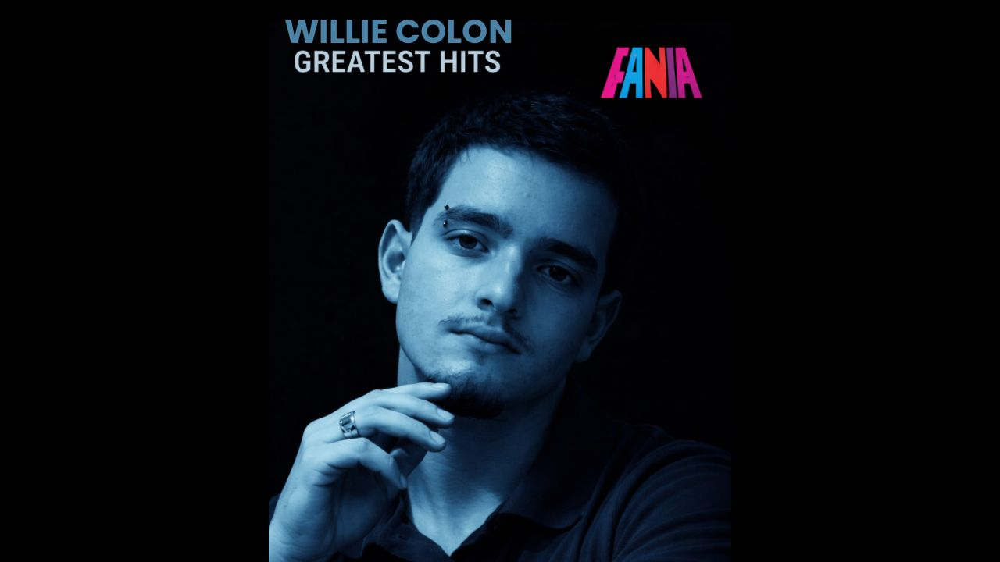
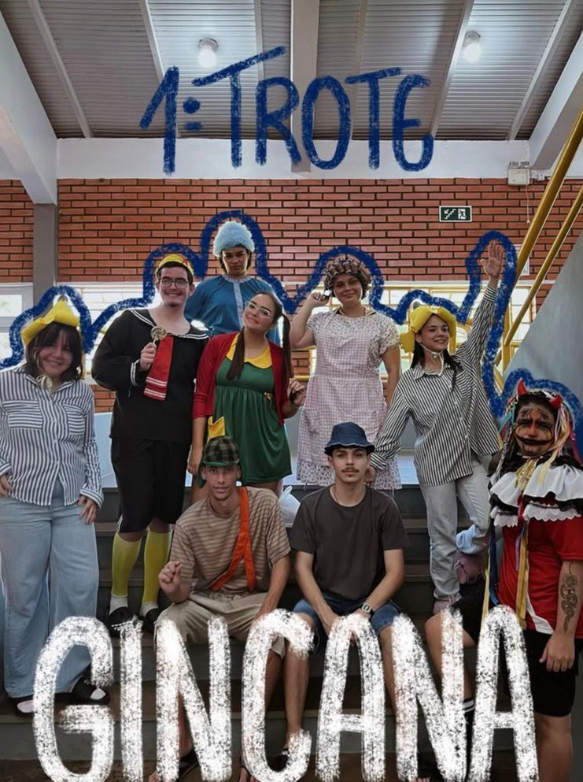

⊹₊˚‧︵‿₊ ¿Quiénes somos? ₊‿︵‧˚₊⊹
⋆˚࿔ Matheus Faleiro ⋆˚࿔

¿Quien soy?
Me llamo Matheus, tengo 18 años y vivo en San Leopoldo.
Algo que me gustas
Me gusta mucho el sol, el mar, las músicas melancólicas, las películas románticas, pasar tiempo de calidad con mis seres queridos y escribir poesía.
Una canción que me gusta ♬⋆.˚
Elegí esta canción por la melancolía presente en su melodía. Transmite una profunda reflexión y emoción, despertando sentimientos que a menudo son difíciles de expresar con palabras. Es profunda y evoca emociones intensas.
˗ˏˋ ★ ˎˊ˗⋆˚࿔ Nayob Mendes ⋆˚࿔

¿Quien soy?
Mi nombre es Nayob, tengo 18 años y vivo en Portão.
Algo que me gustas
Me gusta mucho leer y escuchar música. Me encanta ir a la playa y pasar tiempo con mi familia y con mis amigos más cercanos. También me gustan los momentos de silencio, en los que puedo reflexionar y pensar con calma. Cuando tengo tiempo, me gusta cuidarme y aprovechar esos momentos para relajarme.
Una canción que me gusta ♬⋆.˚
Elegí la canción So Easy, porque tiene una vibra muy buena. Tiene un ritmo relajante y divertido, y en momentos difíciles su sonido hace que la vida parezca más romántica y fácil. Además, es mi canción favorita en este momento.
˗ˏˋ ★ ˎˊ˗⋆˚࿔ Eduarda Schmalz ⋆˚࿔

¿Quien soy?
Me llamo Eduarda, pero todos me llaman Duda. Tengo 18 años y vivo en Estância Velha.
Algo que me gustas
Me gusta ver películas románticas y de aventuras, ir a la playa, ver a mis amigos en la escuela y pasar tiempo con la gente que quiero mucho.
Una canción que me gusta ♬⋆.˚
Elegí esta canción porque la estaba escuchando cuando me enteré de que mi madre estaba embarazada (era mi sueño) y la cantábamos juntas, así que escucharla me recuerda esos momentos de alegría.
˗ˏˋ ★ ˎˊ˗⋆˚࿔ Matheus Torres ⋆˚࿔

¿Quien soy?
Me llamo Matheus, tengo 18 años y vivo en Estância Velha.
Algo que me gustas
Me encantan los gatos, el café y pasar horas paseando para descubrir lugares nuevos, sobre todo cafeterías. No tengo mucho tiempo libre; también disfruto cocinando, viendo series y leyendo libros de vez en cuando. Me gusta escuchar música pop y lo-fi, según el momento.
Una canción que me gusta ♬⋆.˚
Me gusta porque me da la sensación de estar en una nueva etapa de la vida, me hace sentir inflamable, como si pudiera prenderme fuego en cualquier momento.
˗ˏˋ ★ ˎˊ˗⊹₊˚‧︵‿₊ Secciones ₊‿︵‧˚₊⊹
⊹₊˚‧︵‿₊ Objetivos del proyecto ₊‿︵‧˚₊⊹
Objetivo 1
Registrar nuestras actividades y aprendizajes durante las clases de español a lo largo del año escolar.
Objetivo 2
También queremos mejorar nuestro vocabulario, nuestra pronunciación y nuestro conocimiento.
Objetivo 3
A través de este sitio vamos a guardar trabajos, actividades, reflexiones y experiencias que viviremos durante las clases.
¿Lo que esperamos este año?
🡪 Aprender más vocabulario en español, mejorar nuestra pronunciación y comprender mejor el idioma.
🡪 Practica con preguntas de exámenes de ingreso a la universidad para ser admitido.
🡪 Clases dinámicas y práctica de pronunciación
Nuestra experiencia con las clases de español
Hasta ahora nuestra experiencia con el español ha sido muy interesante. El maestro Nikollas impartía clases dinámicas y divertidas, proponía actividades estupendas y nos enseñaba palabras nuevas en el idioma.
⊹₊˚‧︵‿₊ Actividades del año ₊‿︵‧˚₊⊹
Actividad 1: Creación de nuestro sitio web
Para nuestra primera tarea, el maestro Nikollas nos pidió que creárams un sitio web, que sirviera como portafolio.

Creamos el sitio web utilizando Visual Studio Code, en CSS y HTML.
Actividad 2: Canción en español
El maestro nos propuso una actividad sobre países hispanohablantes, y nuestro grupo eligió Puerto Rico. Teníamos que grabar un videoclip de una canción puertorriqueña. Después de investigar algunas opciones, elegimos "¿Oh, qué será?" de Willie Colón.

Fue una experiencia divertida, ya que tuvimos que organizar la grabación y aprender más sobre la cultura musical del país.
˗ˏˋ ★ ˎˊ˗Actividad 3: Presentación del Puerto Rico
El maestro nos pidió hacer una presentación sobre un país hispanohablante, y nuestro grupo eligió Puerto Rico.

En la presentación, hablamos sobre su cultura, su historia y sus tradiciones. También mencionamos algunos aspectos importantes como la música y la comida. Fue una actividad interesante porque aprendimos más sobre el país.
˗ˏˋ ★ ˎˊ˗Actividad 4: Publicación sobre la gincana
Aqui agregaremos nuevas actividades durante el año.


¡Nuestros últimos juegos escolares en ETEP han sido increíbles! Empezamos muy bien; la actividad que elegimos fue la de caracterización, donde nos disfrazamos de personajes de El Chavo del Ocho.
Actividad 4
Aqui agregaremos nuevas actividades durante el año.
Actividad 5
Aqui agregaremos nuevas actividades durante el año.
Actividad 6
Aqui agregaremos nuevas actividades durante el año.
Actividad 7
Aqui agregaremos nuevas actividades durante el año.